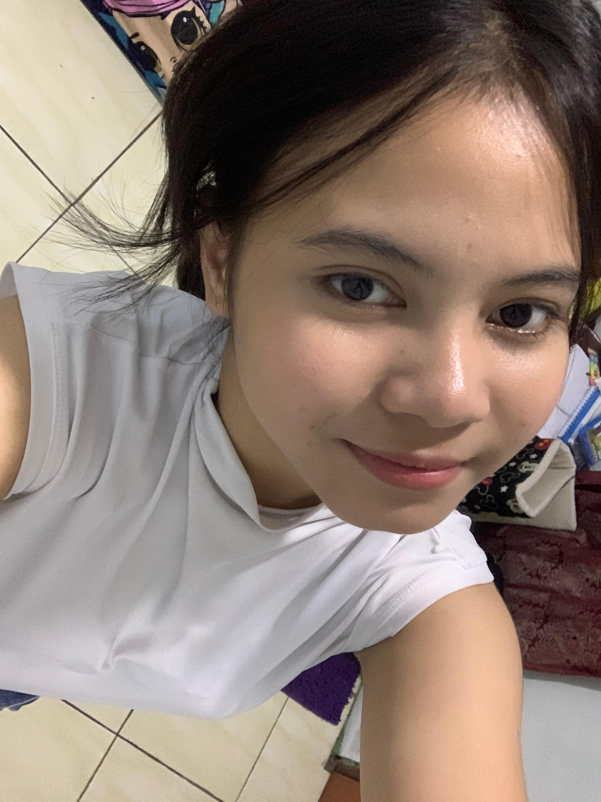
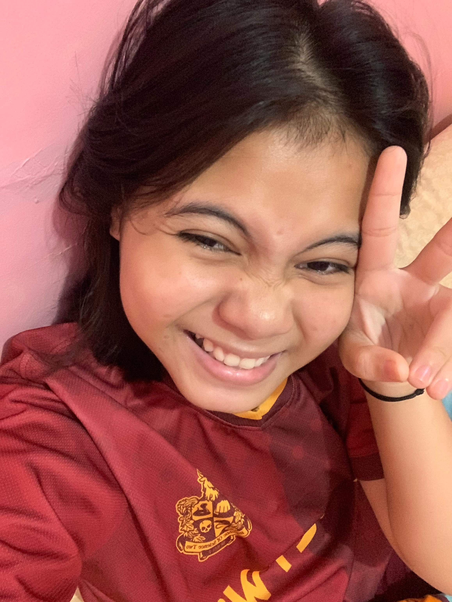
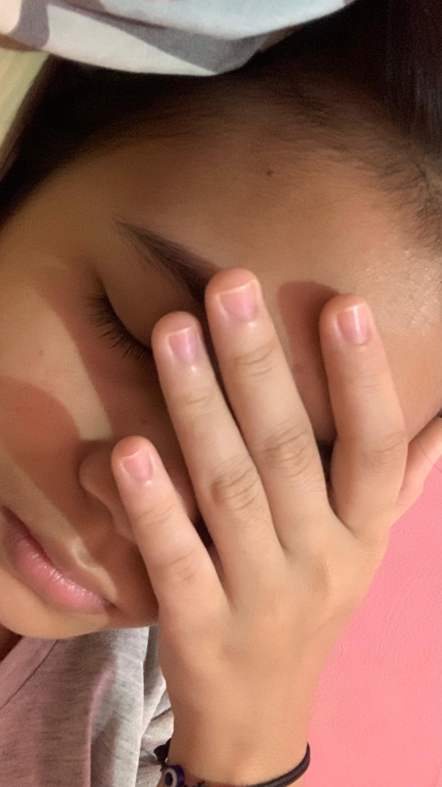
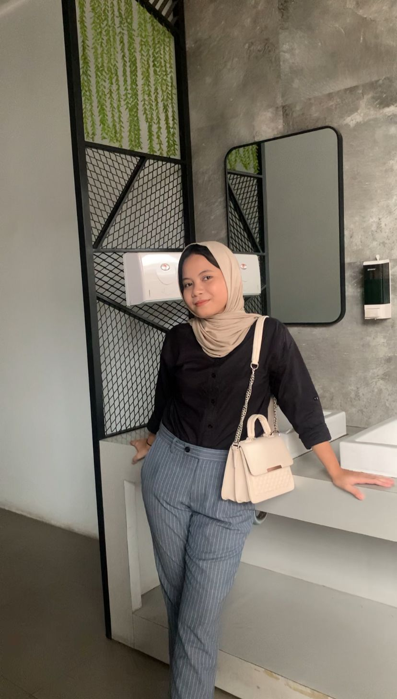
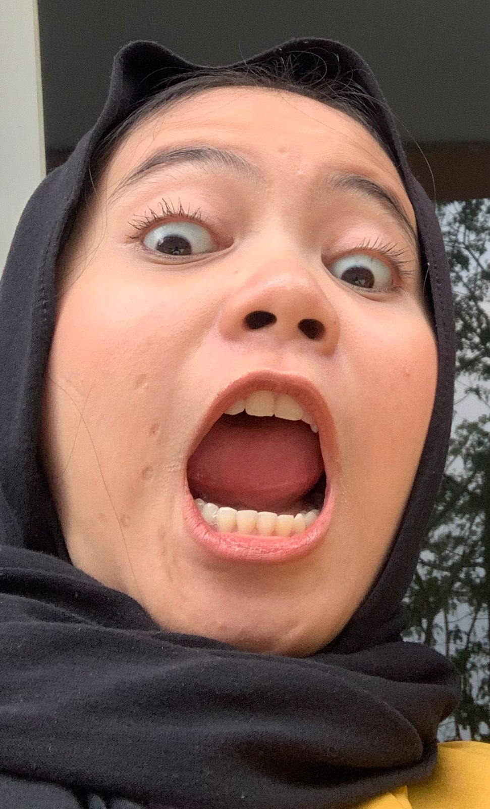

Haloooo! Dian ya? kalo Dian coba di next
Eh tapi sebelumnya tau ga si hari ini hari apa?
ya tau lah hari valentine wakkakak
Hari ini mungkin gw ga ngasih apa apa buat lu. Tapi sebagai rasa sayang gw ke lu, gw bakal ngasihin
web sederhana yang udah gw bikin ini.
Gw tau website yang gw bikin ini ga begitu bagus, tapi semoga aja lu suka liatnya (harus suka)
soalnya ini teh udah make pink pink lucuu.
Sebelum lu baca ini, lu harus play dulu lagu yang dibawah
(btw gw baru nemu tuh cara nambahin fitur musik haha). Kalo udah play lagunya, silahkan di next..
Halo, di hari valentine ini gw pengen banget ngasitau ke lu kalo gw bener bener sayang sama lu. ga
cuma itu, gw juga mau ngasitau betapa lucunya lu karena udah hadir di hidup gw.
Gw berterimakasih banget sama lu, karena dengan adanya lu hadir di hidup gw ini, gw jadi semangat banget ngelakuin hal apapun.
Contohnya nih misal gw lagi badmood. Terus tiba tiba lu ngechat gw, itu badmood gw bisa berkurang banyak banget wkwkwk
Gw ituu sayang banget sama luu tau, soalnya lu bener bener lucu. Mulai dari awal lu berani ngechat gw dan sampe akhirnya gw nyaman sama lu sekarang ini.
Oiya, yang bikin gw suka sama lu itu adalah sifat asiknya lu. Kayak, lu tuh bisa gitu ngomong banyak banget tanpa malu malu, apalagi sekarang mah suka ngepap yang random random wkwk.
Sebenernya gw juga gatau si kenapa kalo ngeliat lu itu rasanya DEG DEG AN BANGET. Gw juga ngerasa kobisa ya lu suka sama gw, padahal kan banyak yang lebih dari gw gitu.
7 Alasan mengapa Dian sangat lucu:
1. Dian sangat random
2. Dian pinter nyanyi
3. Dian kalo cerita itu pasti panjang
4. Dian bucin (kaget banget)
5. Dian keliatan jutek di real life (omggggg)
6. SUARANYAAA LUCUUUUUU
7. Dian suka pap dan ngirim vid secara tiba tiba
8. Dian cegil omg omg
Top 5 Foto ter gemesnya Dian





Bad - Wave to earth